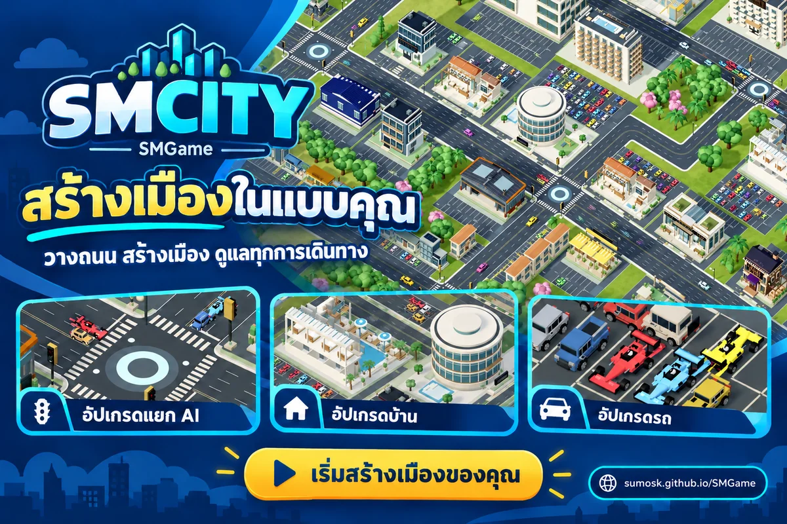

คลิกซ้ายและขวาพร้อมกันเพื่อหมุนจอ
ย้าย
รื้อถอน
N ↑
PHUKET ISLAND
อ่าวไทย · อันดามัน
อ
ที่ปรึกษาเมือง
มาดูเมืองของเรากันค่ะ
⌄
สิ่งที่ไปได้ดี
เรื่องที่ควรดูแล
ทำอะไรก่อนดี
✦
ผู้ช่วยเมือง: กำลังตรวจความต้องการ
×
วันจันทร์ · วันที่ 1
06:00
Ⅱ
1×
2×
5×
10×
20×
ข้ามวัน
↠
ทุกการเดินทาง เริ่มจากเมืองที่คุณสร้าง
THAILAND / SANDBOX
▣
เปิดป้าย
😥
สถานะรถ
✦
เปิด AI
◐
ขาว/ดำ
⌄
หุบเครื่องมือ
SMCITY
v4.6
?
งบประมาณ
฿500,000
›
ประชาชน :
0
(0)
›
นักท่องเที่ยว :
0
(0)
›
ความสุข :
100
%
›
จราจร :
100
%
›
บัญชี
เซป/โหลด
✕ ยกเลิกย้ายอาคาร
×
×
♙
บัญชีผู้ใช้
เข้าสู่ระบบเพื่อบันทึกเมืองและเล่นต่อบนอุปกรณ์อื่น
เข้าสู่ระบบ
สมัครสมาชิก
ชื่อผู้ใช้ หรืออีเมลเดิม
รหัสผ่าน
เข้าสู่ระบบและบันทึกเกม
ลองบันทึกอีกครั้ง
กลับไปเล่น

×